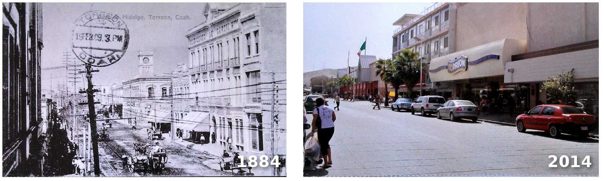
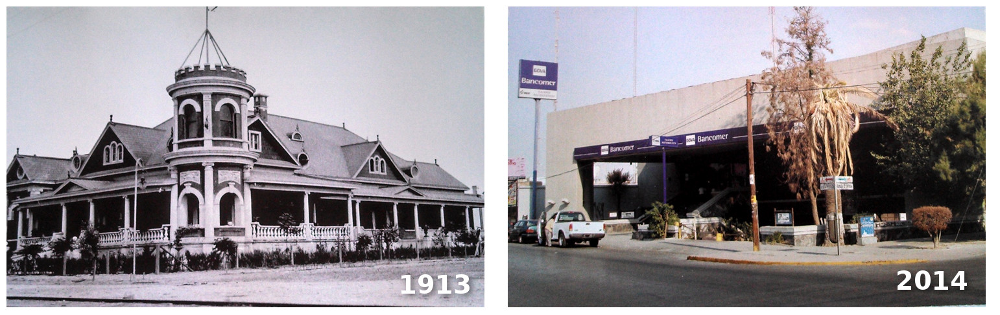
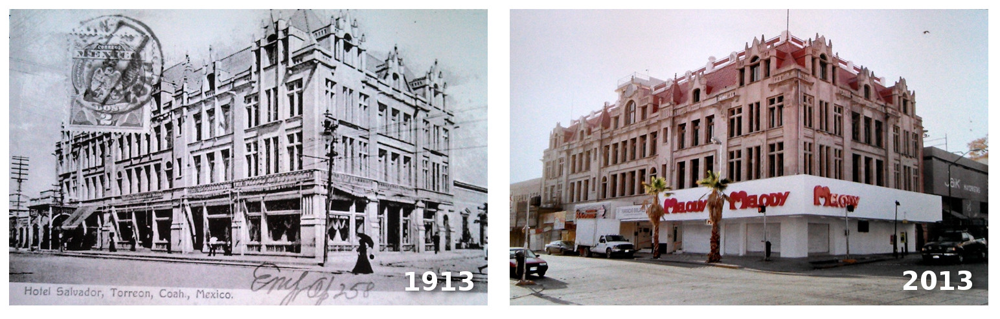
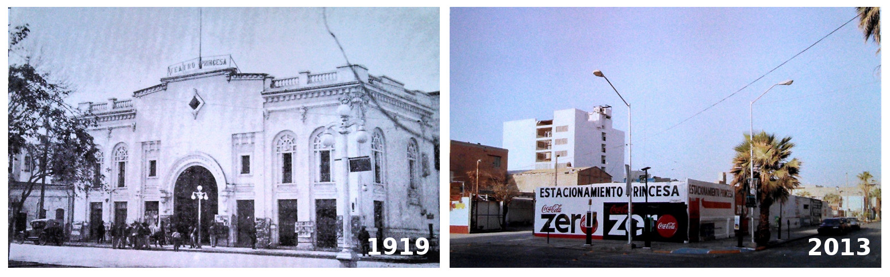
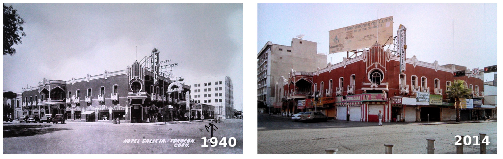

Los bienes inmuebles catalogados son aquellos inmueble, construcciones o sitios clasificado por el Instituto nacional de Antropología e Historia (INAH) o el Instituto Nacional de Bellas Artes (INBA), mediante un proceso técnico- administrativo haciendo la identificación, ubicación y cuantificación de edificaciones representativas con carácter histórico, cultural, social, político o religioso que forman parte de la identidad del país, una ciudad, población o barrio.(1)
En la actualidad Torreón a pesar de ser una ciudad relativamente joven, de 107 años tiene un Catálogo de Inmuebles Patrimoniales del INAH de Coahuila (1984) actualmente con 83 fichas de edificaciones más un Patrimonio Artístico que protege el INBA con un número similar de edificaciones catalogados; algunas propiedades se encuentran en ambos patrimonios, lo que los convierte en patrimonio Histórico y/o Artístico de la ciudad. Aunado a esto, si se localiza dentro de alguna de las 241 manzanas que conforman el polígono decretado como Centro Histórico de la ciudad de Torreón, está sujeto a restricciones en cuanto a su mantenimiento uso o conservación.
Recordemos que una construcción responde a las necesidades de sus propietarios, así como usos requeridos, deseos, valores culturales y estéticos de una época e inseparable del entorno al que pertenece de acuerdo a los acontecimientos históricos, económicos y políticos que seviven durante su construcción. Con el paso del tiempo, las ciudades cambian, determinadas áreas se vacían y se van desarrollando nuevos centros urbanos, qué generan ciudades más dispersas. El abandono de los Centros Históricos es un factor común que afecta significativamente a los bienes inmuebles ubicados en este sector, causando una devaluación en el suelo, deficiencia en su infraestructura, afectándolos económicamente, dejando de ser rentables, los inquilinos que los habitan las abandonan, siguiendo el “desarrollo de las nuevos sectores” que ofrecen una oferta más atractiva, este comportamiento conlleva que los propietarios de inmuebles patrimonio oferten a renta, venta o busquen una nueva alternativa de inversión para sus patrimonios que dejaron de ser una buena fuente de ingresos y las promueven al margen de su valor histórico y cultural, con lo que llega el deterioro, vandalismo y destrucción.
Su valor no solo radica por estar en pie, con el paso del tiempo, no es una ruina arqueológica, su verdadero valor está en el uso, rentabilidad y por lo que representa para una sociedad que se identifica con él, estos edificios tienen una constante lucha de intereses que va desde el uso adecuado hasta la rentabilidad económica que representa para sus propietarios y esta dualidad es lo que determina en realidad la correcta conservación y preservación del mismo.
Existen muchos casos de edificios que han sido demolidos por causas de valor inmobiliario por representar mejor oportunidad como terreno por su ubicación, en el que se puede construir un nuevo proyecto desde cero, que el valor que representa como inmueble catalogado como patrimonio histórico y/o artístico,en el que se debe tener especial cuidado en el nuevo uso al que se va a destinar, así como, la adecuación en cuanto a los espacios y cuidado de su estilo y materiales.
En la actualidad han desaparecido 24 edificios catalogados como patrimonio, sin darnos cuenta, hemos perdido una parte importante de la riqueza que nos define como una ciudad que nace partiendo de una importante actividad económica y conectividad identidad e imagen urbana que se ha ido diluyendo con el paso del tiempo.
Imagen de la Av. Hidalgo

Juárez y González Ortega

Hotel Salvador

Av. Juárez y Zaragoza

Av. Hidalgo y Valdez Carrillo

Hotel “Galicia”

Debemos de tomar acciones que nos lleven a revalorizar nuestro centro histórico al que muchos pueden no encontrarle valor, donde ni sus propios habitantes le apuestan, pero lo más importante es que es “nuestro” Centro Histórico de Torreón, donde está la historia del nacimiento de nuestra ciudad y si nosotros no lo revalorizamos será una pérdida irreparable del patrimonio y de nuestra identidad local.
Recordemos que para poner en valor el sector es importante la socialización de los proyectos que se realizan; en los últimos años, se han desarrollado algunos proyectos importantes al entorno de este polígono. Los rescates de los centros históricos como casos de existo son planes con visiones a largo plazo en los que se complementan acciones como son:
- Rescate de fachadas de edificios históricos
- Sendas peatonales
- Balance entre uso comercial y habitacional
- Iluminación de templos y edificios históricos
- Plan de movilidad urbana
- Rescate de barrios típicos
- Desmotivación del uso del coche
- Estrategia de socialización y fundamento jurídico(2)
El Municipio de Torreón cuenta con un Reglamento de Protección y Conservación del Conjunto Histórico y Patrimonio Construido; aprobado en la Cuadragésima séptima sesión ordinaria de cabildo celebrada el 24 de octubre de 2004, que tiene las bases para la creación de políticas públicas para la conservación y protección del Centro Histórico.
Bibliografía
- Instituto de Administración y Avalúos de Bienes Nacionales.
- Centro histórico de Durango | Un rescate que parecía imposible. Sibely Cañedo. 27-03-2013.
- Fotografías en los foros del Siglo de Torreón